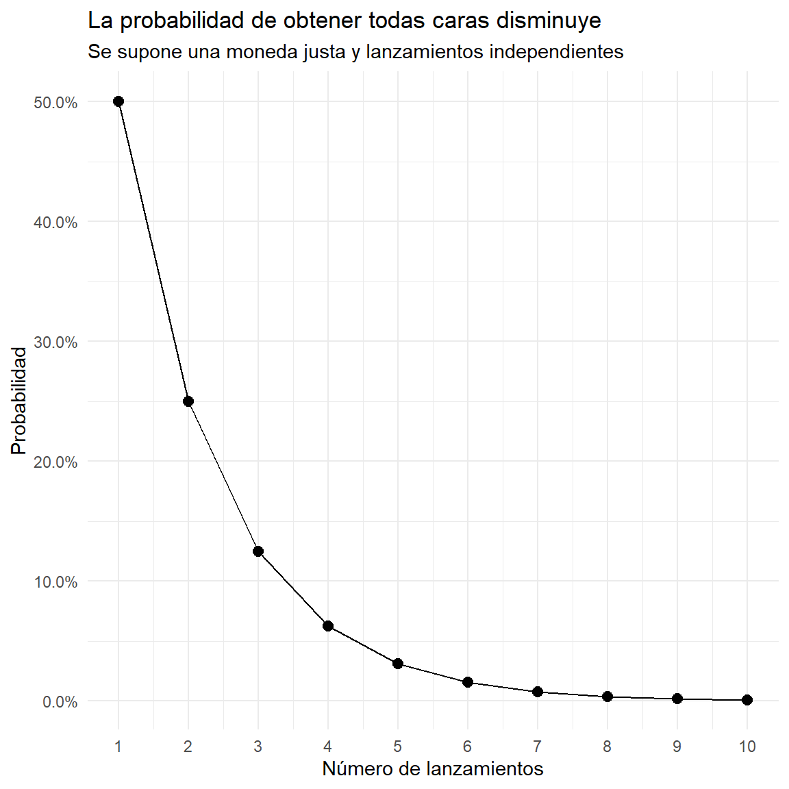
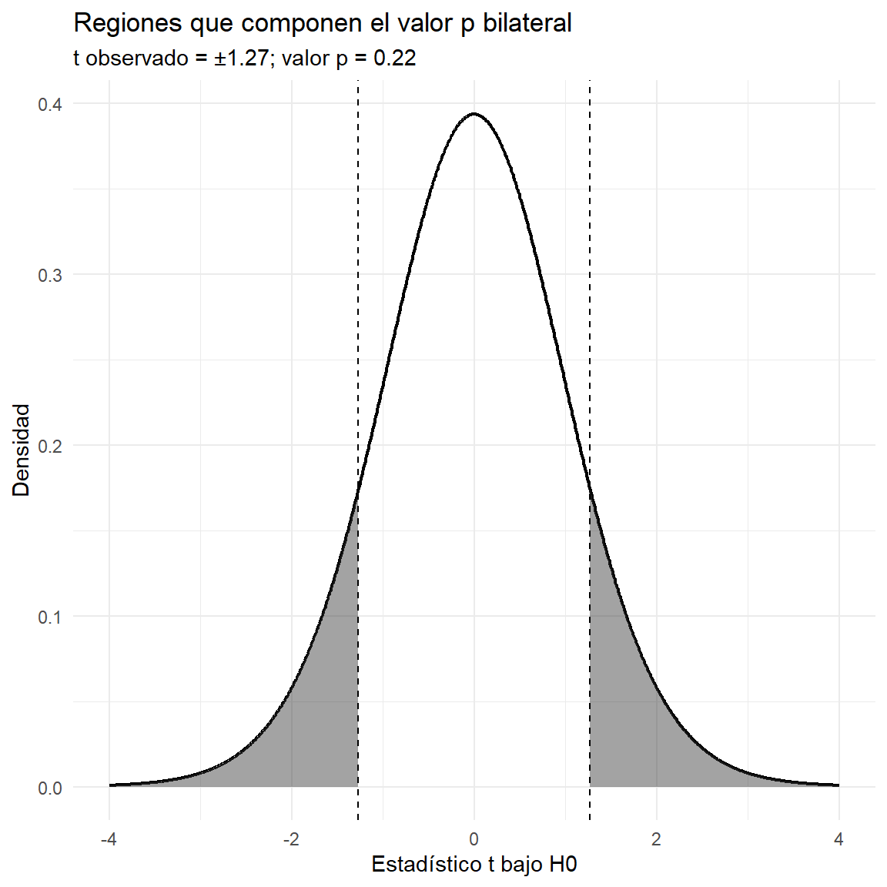

Al finalizar, el lector podrá definir el valor p, diferenciarlo del nivel de significación, interpretar pruebas de hipótesis y calcular resultados con R.
Nota sobre las gráficas: todas las gráficas estadísticas de este documento se construyen con ggplot2. El paquete scales se utiliza únicamente para formatear el eje porcentual; knitr::kable() se usa para presentar tablas.
Idea central: el valor p es la probabilidad, suponiendo que la hipótesis nula y el modelo estadístico sean correctos, de obtener un estadístico tan extremo como el observado o más extremo, de acuerdo con la hipótesis alternativa.
2 .Hipótesis estadísticas
Una hipótesis estadística es una afirmación acerca de una característica de una población, como una media o una proporción.
Hipótesis nula (H_0): afirmación de referencia que se evalúa.
Hipótesis alternativa (H_A): plantea una diferencia, asociación o efecto que se quiere investigar.
Ejemplo: una institución afirma que el puntaje medio de sus estudiantes es de 65 puntos.
H_0:\mu=65 \qquad H_A:\mu\ne65
La alternativa es bilateral porque considera diferencias por encima o por debajo de 65. Si la pregunta fuera si la media supera 65, la alternativa sería H_A:\mu>65.
Una media muestral distinta de 65 no demuestra automáticamente que la media poblacional sea diferente: las muestras varían por azar. La prueba permite evaluar qué tan inusual sería el resultado bajo H_0.
3 ¿Qué es el valor p?
El valor p cuantifica la incompatibilidad de los datos observados con la hipótesis nula, bajo el modelo estadístico utilizado.
Un valor p pequeño indica que los datos serían poco habituales si H_0 fuera cierta.
Un valor p grande indica que los datos no son especialmente incompatibles con H_0, pero no demuestra queH_0 sea verdadera.
El valor p no es la probabilidad de que H_0 sea verdadera, ni la probabilidad de que el resultado se deba “al azar”. Tampoco mide el tamaño ni la importancia práctica de un efecto.
4 .Ejemplo de la moneda
Se plantea como hipótesis nula que la moneda es común y se muestran las probabilidades de obtener cara en todos los lanzamientos: 0.50, 0.25 y 0.125 para uno, dos y tres lanzamientos.
Si la moneda es justa, la probabilidad de obtener todas caras en n lanzamientos independientes es (1/2)^n. Esta probabilidad no siempre equivale al valor p: para una prueba bilateral también pueden contar resultados igualmente extremos en la dirección contraria. Por ejemplo, la probabilidad de obtener todas caras o todas cruces es 2(1/2)^n.
Ver código
n <-1:10moneda <-data.frame(lanzamientos = n,todas_caras =0.5^n,todas_caras_o_todas_cruces =2*0.5^n)knitr::kable(moneda, digits =4,col.names =c("Lanzamientos", "P(todas caras)","P(todas caras o todas cruces)"))
Lanzamientos
P(todas caras)
P(todas caras o todas cruces)
1
0.5000
1.0000
2
0.2500
0.5000
3
0.1250
0.2500
4
0.0625
0.1250
5
0.0312
0.0625
6
0.0156
0.0312
7
0.0078
0.0156
8
0.0039
0.0078
9
0.0020
0.0039
10
0.0010
0.0020
Ver código
library(ggplot2)ggplot(moneda, aes(x = lanzamientos, y = todas_caras)) +geom_line() +geom_point(size =2.5) +scale_x_continuous(breaks = n) +scale_y_continuous(labels = scales::label_percent(accuracy =0.1)) +labs(title ="La probabilidad de obtener todas caras disminuye",subtitle ="Se supone una moneda justa y lanzamientos independientes",x ="Número de lanzamientos",y ="Probabilidad" ) +theme_minimal()

Interpretación: en tres lanzamientos, la probabilidad de obtener cara las tres veces es 1/8=0.125. Aunque el resultado es relativamente poco frecuente, por sí solo no demuestra que la moneda esté trucada. La conclusión depende de la hipótesis alternativa y de qué resultados se definan como extremos.
5 .Nivel de significación y regla de decisión
El nivel de significación \alpha se establece antes del análisis. Un valor frecuente es 0.05, aunque también se utilizan 0.01 o 0.10 según el contexto.
Comparación
Decisión
p \leq \alpha
Rechazar H_0; el resultado es estadísticamente significativo al nivel elegido.
p > \alpha
No rechazar H_0; la evidencia no alcanza el umbral elegido.
No rechazar H_0 no significa aceptarla como verdadera.
Un valor p=0.049 y uno p=0.051 conducen a decisiones distintas con el umbral 0.05, pero la evidencia no cambia bruscamente entre ambos. Informe el valor p exacto y, cuando sea pertinente, un intervalo de confianza y una medida del tamaño del efecto.
6 .Ejemplo educativo: prueba t para una media
Una institución quiere evaluar si el puntaje medio poblacional difiere de 65 puntos. Se utilizarán 20 puntajes simulados para ilustrar el procedimiento. Estos datos son ficticios y se generan de manera reproducible.
H_0:\mu=65 \qquad H_A:\mu\ne65
Ver código
set.seed(2026)puntajes <-round(rnorm(20, mean =69, sd =6), 1)datos <-data.frame(estudiante =seq_along(puntajes),puntaje = puntajes)knitr::kable(datos, caption ="Puntajes simulados de 20 estudiantes")
Puntajes simulados de 20 estudiantes
estudiante
puntaje
1
72.1
2
62.5
3
69.8
4
68.5
5
65.0
6
53.9
7
64.6
8
62.9
9
69.7
10
66.2
11
66.6
12
64.6
13
67.7
14
67.6
15
53.7
16
77.1
17
72.7
18
70.3
19
64.2
20
73.1
6.1 .Explorar los datos
Ver código
ggplot(datos, aes(x = puntaje)) +geom_histogram(bins =8, color ="white") +geom_vline(xintercept =65, linetype ="dashed", linewidth =1) +labs(title ="Distribución de puntajes simulados",subtitle ="La línea discontinua indica el valor de referencia: 65",x ="Puntaje",y ="Frecuencia" ) +theme_minimal()
One Sample t-test
data: datos$puntaje
t = 1.2697, df = 19, p-value = 0.2195
alternative hypothesis: true mean is not equal to 65
95 percent confidence interval:
63.93656 69.34344
sample estimates:
mean of x
66.64
cat("IC del 95% para la media:", round(ic_inferior, 2),"a", round(ic_superior, 2), "\n")
IC del 95% para la media: 63.94 a 69.34
6.3 .Interpretación
Interprete el resultado que produzca la ejecución:
Si p\leq0.05, se rechaza H_0 al nivel del 5 % y hay evidencia estadística de que la media poblacional difiere de 65.
Si p>0.05, no se rechaza H_0: no hay evidencia suficiente de una diferencia al nivel establecido.
El intervalo de confianza del 95 % muestra valores plausibles para la media. En una prueba bilateral convencional, si el intervalo no contiene 65, la decisión suele coincidir con el rechazo al nivel 0.05.
La conclusión debe mencionar el contexto, el valor p, el nivel de significación y, cuando sea útil, el intervalo de confianza y el tamaño del efecto.
6.4 .Fórmula del estadístico t
Para una prueba t de una muestra, el estadístico de prueba se calcula como:
t = \frac{\bar{x} - \mu_0}{s/\sqrt{n}},
donde \bar{x} es la media muestral, \mu_0 es el valor especificado bajo H_0, s es la desviación estándar muestral y n es el tamaño de la muestra.
7 .Gráfica de las colas del valor p
En una prueba t bilateral, el valor p es la probabilidad, bajo H_0, de obtener un estadístico con valor absoluto igual o mayor que el observado. Por eso se consideran las dos colas.
Ver código
t_obs <-abs(estadistico_t)df_t <- grados_libertadlimite <-max(4, t_obs +1)curva_t <-data.frame(x =seq(-limite, limite, length.out =1200))curva_t$densidad <-dt(curva_t$x, df = df_t)ggplot(curva_t, aes(x = x, y = densidad)) +geom_line(linewidth =0.8) +geom_area(data =subset(curva_t, x <=-t_obs), alpha =0.45) +geom_area(data =subset(curva_t, x >= t_obs), alpha =0.45) +geom_vline(xintercept =c(-t_obs, t_obs), linetype ="dashed") +labs(title ="Regiones que componen el valor p bilateral",subtitle =paste0("t observado = ±", round(t_obs, 3),"; valor p = ", format.pval(valor_p, digits =3)),x ="Estadístico t bajo H0",y ="Densidad" ) +theme_minimal()

Las áreas sombreadas representan resultados tan extremos como el observado, en ambas colas. Cuanto más lejos esté el estadístico observado del centro de la distribución bajo H_0, menor suele ser el valor p.
8 .Ejemplo de proporción: satisfacción estudiantil
Una entidad educativa quiere evaluar si la proporción de estudiantes satisfechos difiere del 70 %. En una muestra de 100 estudiantes, 78 manifiestan satisfacción.
H_0:p=0.70 \qquad H_A:p\ne0.70
Se utiliza la prueba binomial exacta mediante binom.test(), que también pertenece a stats.
Ver código
satisfechos <-78total <-100prueba_prop <-binom.test( satisfechos, total, p =0.70,alternative ="two.sided",conf.level =0.95)prueba_prop
Exact binomial test
data: satisfechos and total
number of successes = 78, number of trials = 100, p-value = 0.08184
alternative hypothesis: true probability of success is not equal to 0.7
95 percent confidence interval:
0.6860803 0.8566964
sample estimates:
probability of success
0.78
Interpretación: compare el valor p con \alpha=0.05. Si p\leq0.05, hay evidencia estadística de que la proporción poblacional difiere del 70 %. Si p>0.05, no hay evidencia suficiente para afirmar una diferencia al nivel establecido.
9 .Errores frecuentes
“p=0.03 significa que hay un 3 % de probabilidad de que H_0 sea verdadera”. Incorrecto: el valor p se calcula suponiendo H_0.
“Un valor p grande demuestra que no hay efecto”. Incorrecto: puede haber poca precisión o una muestra insuficiente.
**“Si** p<0.05, el efecto es importante”. No necesariamente; significación estadística e importancia práctica son conceptos diferentes.
**“Si** p>0.05, aceptamos H_0”. Es preferible decir “no se rechaza H_0”.
“El valor p es la probabilidad de que el resultado ocurra por azar”. Esta expresión omite la hipótesis nula, el estadístico de prueba y la definición de resultados extremos.
10 .Funciones y paquetes de R
Necesidad
Función
Aplicación
Prueba t
stats::t.test()
Contraste de medias
Prueba binomial exacta
stats::binom.test()
Contraste de una proporción
Chi-cuadrado
stats::chisq.test()
Asociación en tablas o bondad de ajuste
Prueba exacta de Fisher
stats::fisher.test()
Asociación en tablas de contingencia
Comparación de dos varianzas
stats::var.test()
Comparación bajo supuestos específicos
Gráficas
ggplot2
Histogramas y curvas
Tablas
knitr::kable()
Tablas para el documento
Las funciones del paquete stats forman parte de R. Para instalar ggplot2, si aún no está disponible, ejecute una sola vez en la consola:
Ver código
install.packages("ggplot2")
11 .Actividad de aprendizaje
Una universidad sostiene que el tiempo medio de desplazamiento de sus estudiantes hasta el campus es de 35 minutos. Se toma una muestra de 25 estudiantes.
Escriba H_0 y H_A para evaluar si la media difiere de 35 minutos.
Explique por qué el valor p depende de la hipótesis nula y del tipo de prueba.
Si p=0.018, ¿qué decisión tomaría con \alpha=0.05? ¿Y con \alpha=0.01?
¿Por qué un resultado significativo no implica necesariamente una diferencia importante para la gestión universitaria?
¿Qué información adicional reportaría?
11.1 .Solución orientativa
H_0:\mu=35 y H_A:\mu\ne35.
Porque el valor p se calcula con la distribución del estadístico bajo H_0 y con la definición de resultados extremos.
Con \alpha=0.05, se rechaza H_0; con \alpha=0.01, no se rechaza H_0.
La importancia práctica depende del tamaño de la diferencia y de sus consecuencias, no solo de la evidencia estadística.
Tamaño de muestra, estadístico de prueba, grados de libertad cuando correspondan, valor p, intervalo de confianza y tamaño del efecto.
12 .Resumen
El valor p evalúa la compatibilidad de los datos con H_0 bajo el modelo estadístico.
Se calcula considerando resultados tan extremos como el observado o más extremos.
Se compara con un nivel \alpha establecido antes del análisis.
p\leq\alpha conduce a rechazar H_0; p>\alpha conduce a no rechazarla.
El valor p no es la probabilidad de que H_0 sea verdadera ni una medida de importancia práctica.
Para una interpretación completa, conviene acompañarlo de intervalos de confianza, tamaños del efecto y una explicación contextual.